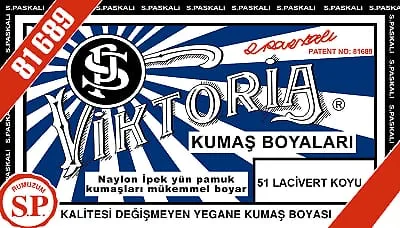

Çatdırılma Xidməti
Azərpoçt ilə Bakı və bütün bölgələrə çatdırılma. 5 ədəddən yuxarı sifarişlərdə çatdırılma PULSUZDUR. Minimum sifariş 2 ədəd.
Viktoria 1 KG Paketlər
Quru təmizləmələr, otellər və xalça boyama üçün peşəkar həll. Daha ucuz, daha sərfəli.
Kataloqa Keç
Niyə Bu Boyalar?
👕 Köynək boyamaq
👖 Cins boyamaq
👮 Forma boyamaq
🧴 Xlor ləkəsi
🏢 Otel xidməti
🏁 Xalça boyama
Klikləyin Oxuyun
⭐⭐⭐⭐⭐